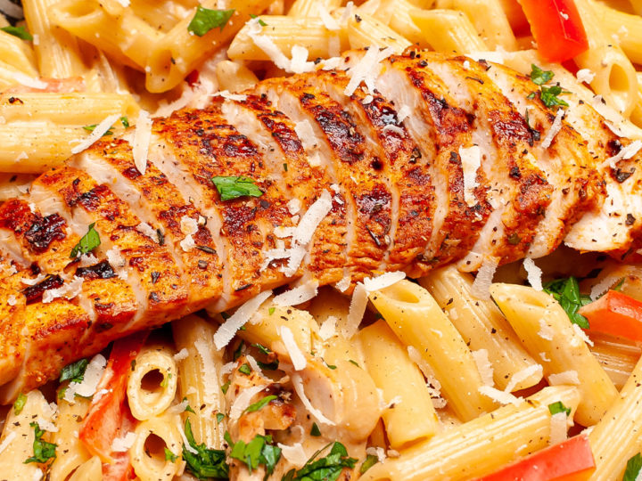

Creamy Cajun Chicken Pasta

This Cajun Chicken Pasta is ridiculously creamy, packed with warm spicy flavor
This easy chicken and pasta recipe is made with tender chicken breast (use up those leftovers if you’ve got them!), penne pasta, and the creamiest cheese sauce. It’s also filled with herbs, diced bell pepper, and a spicy Cajun blend that you will absolutely fall in love with. It’s the perfect combination of spicy and creamy.
Ingredients
- 4 ounces linguine pasta
- 2 boneless, skinless chicken breast halves, sliced into thin strips
- 2 teaspoons Cajun seasoning
- 2 tablespoons butter
- 1 green bell pepper, chopped
- ½ red bell pepper, chopped
- 4 fresh mushrooms, sliced
- 1 green onion, minced
- 1 ½ cups heavy cream
- ¼ teaspoon dried basil
- ¼ teaspoon lemon pepper
- ⅛ teaspoon garlic powder
- ⅛ teaspoon ground black pepper
- 2 tablespoons grated Parmesan cheese
Steps
- Bring a large pot of lightly salted water to a boil. Add linguini pasta, and cook for 8 to 10 minutes, or until al dente; drain.
- Meanwhile, place chicken and Cajun seasoning in a bowl, and toss to coat.
- In a large skillet over medium heat, saute chicken in butter until no longer pink and juices run clear, about 5 to 7 minutes. Add green and red bell peppers, sliced mushrooms and green onions; cook for 2 to 3 minutes. Reduce heat, and stir in heavy cream. Season the sauce with basil, lemon pepper, salt, garlic powder and ground black pepper, and heat through.
- In a large bowl, toss linguini with sauce. Sprinkle with grated Parmesan cheese.